insider info / informace zevnitřnová informace / fakt
Bývalý kolega z obce kde jsem bydlel z Albrechtice u Českého Těšína
Komentář pod příspěvkem s #nezapomeneme přidává osobní informaci o oceněném/památkovém vojákovi z konkrétní obce.
Oficiální = MO / AČR (weby *.mo.gov.cz + oficiální sociální účty) · Neoficiální = jednotkové / dobrovolnické / komunitní kanály
Centrální weby ministerstva a armády · 7 položek
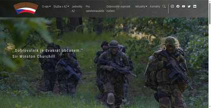
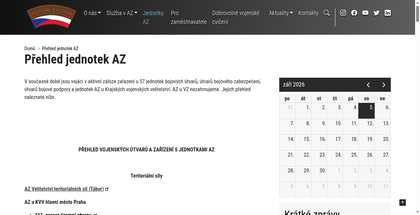
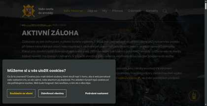
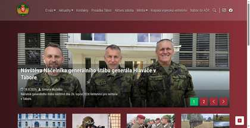
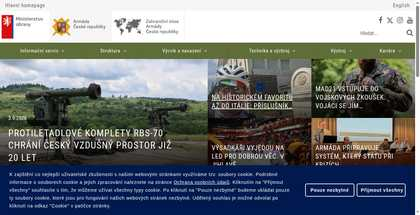
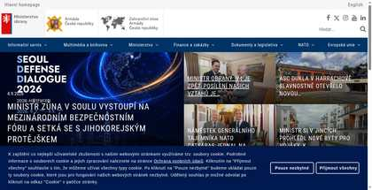
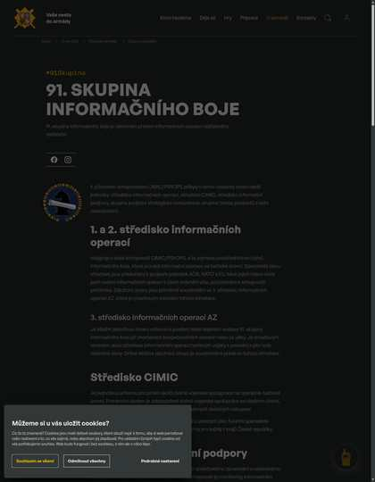
Aktivní záloha u KVV · 15 položek
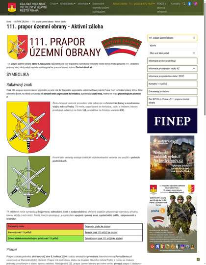
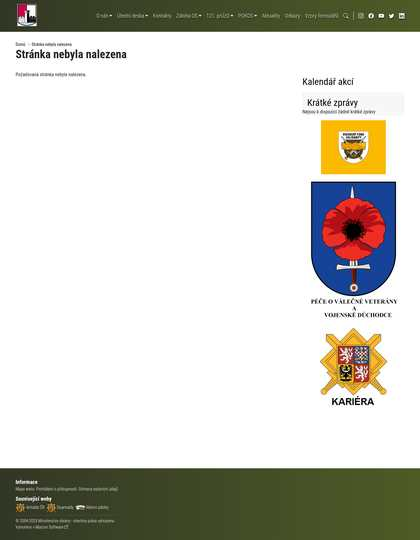
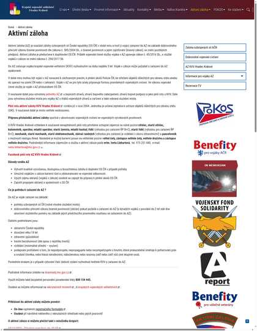
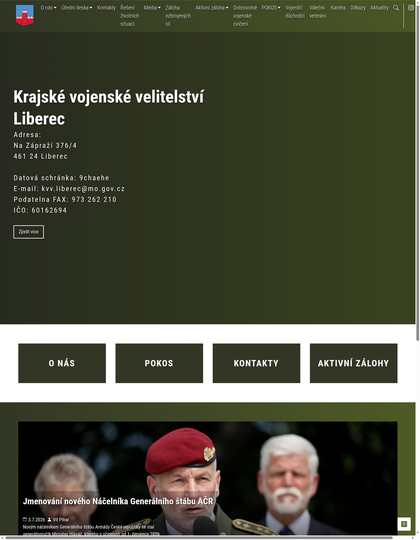
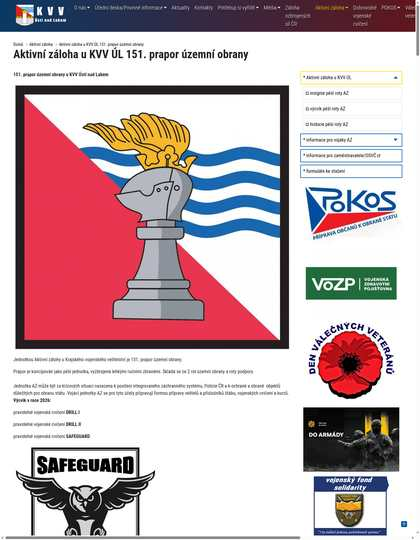
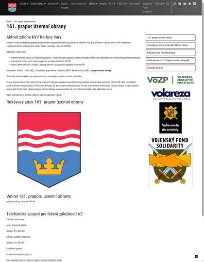
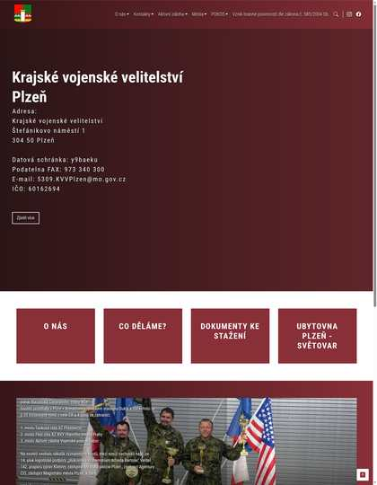
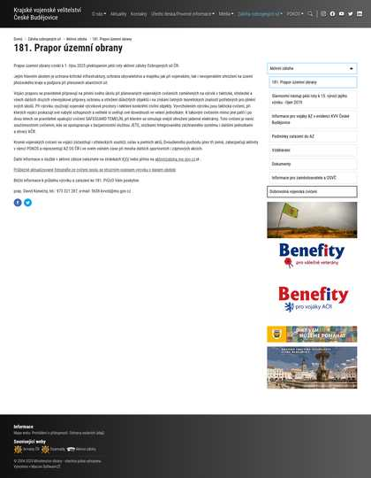
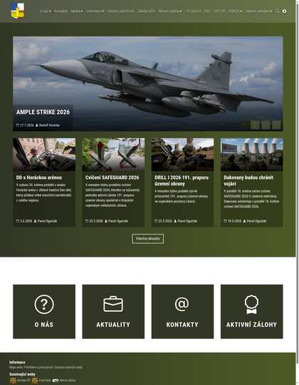
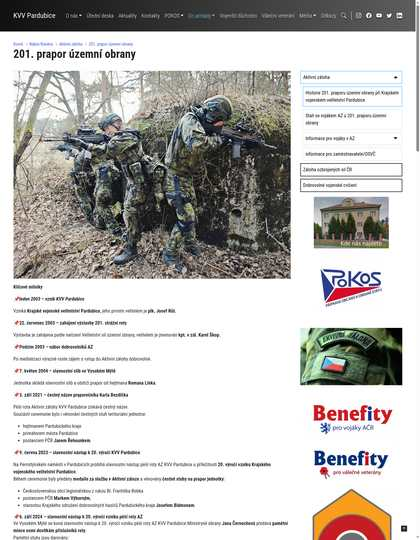
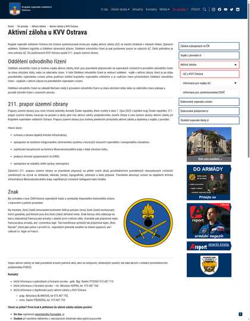
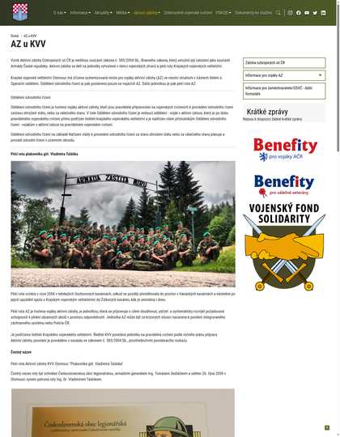
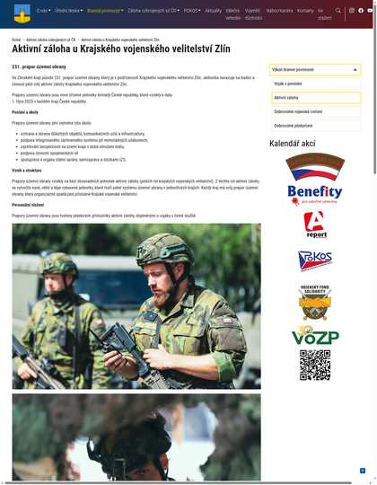
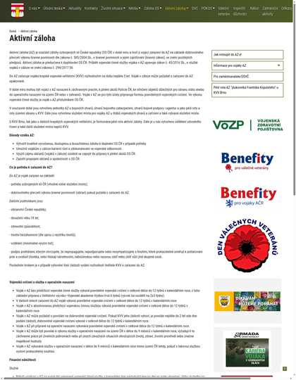
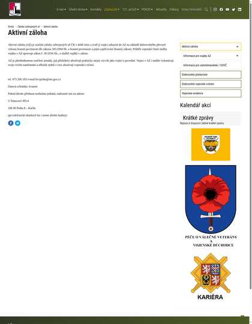
Vlastní weby praporů a rot · 9 položek
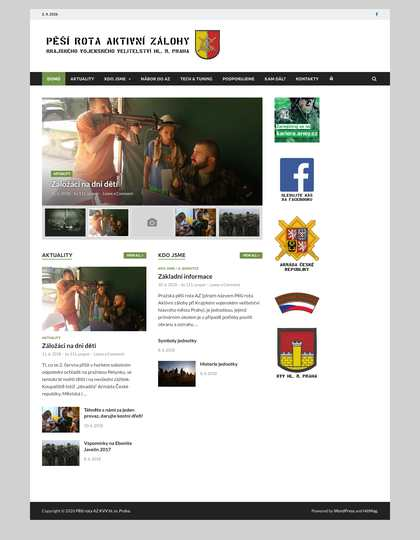
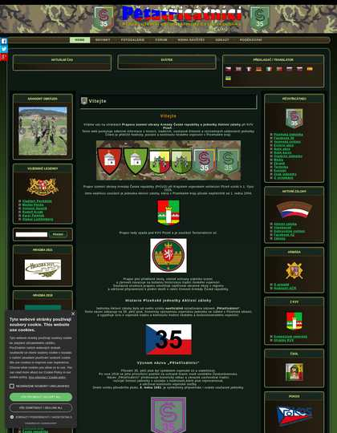
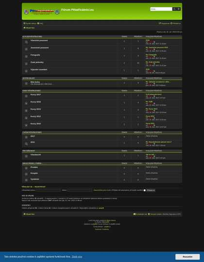
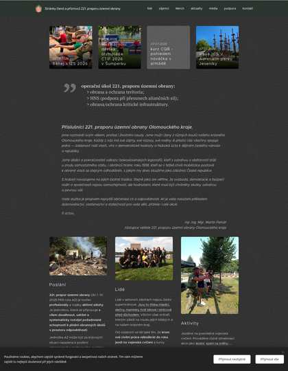
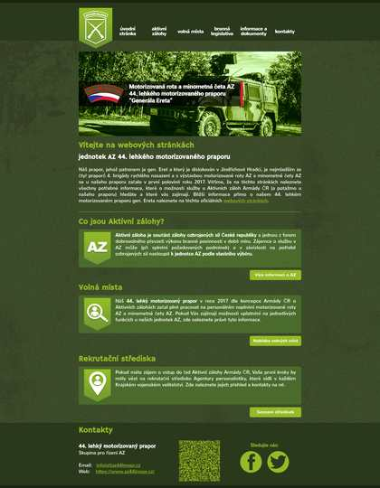
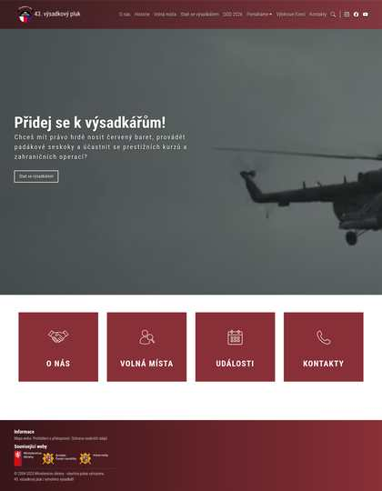
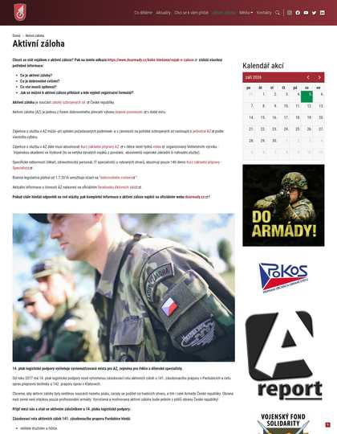
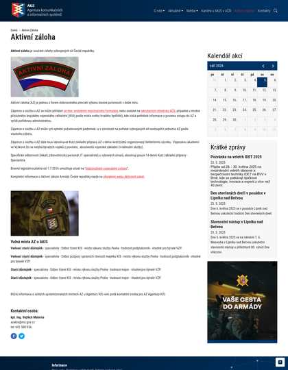
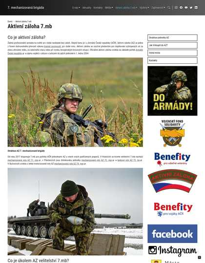
ARDOS, POKOS, SVZ, ČsOL, RESCO… · 8 položek
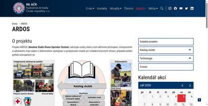
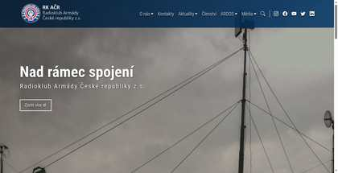
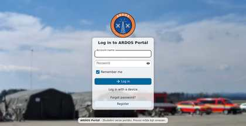
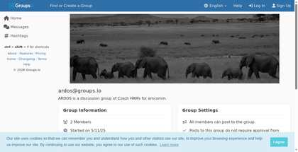
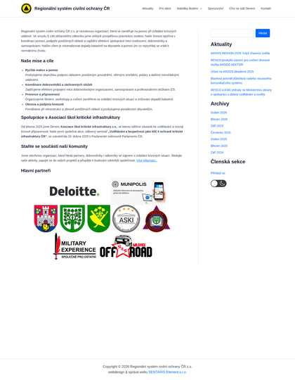
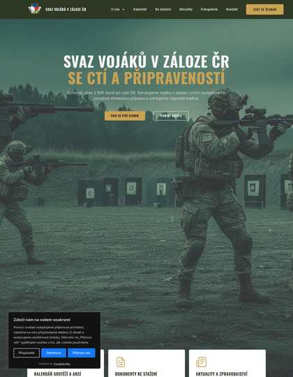
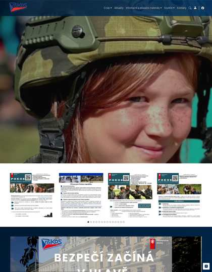
Veřejné stránky AČR / AZ · 20 položek
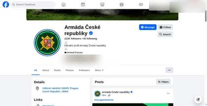
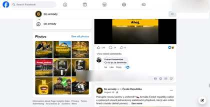
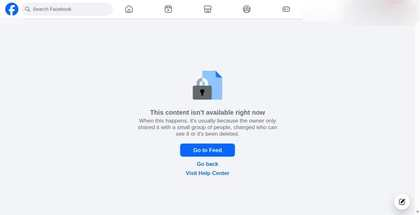
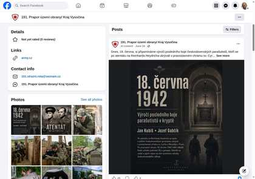
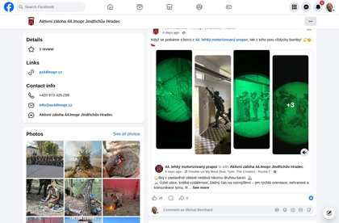
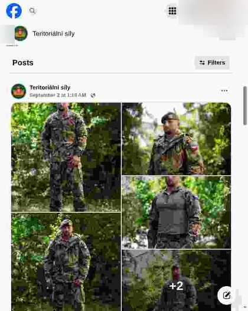
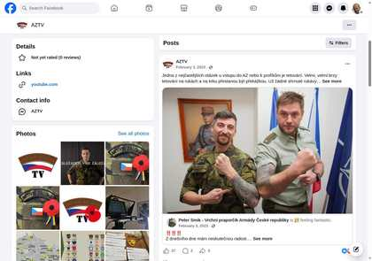
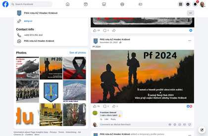
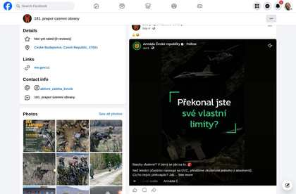
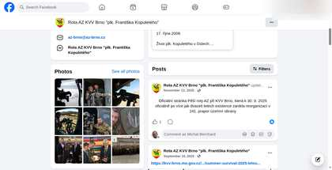
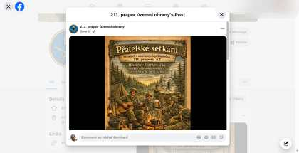
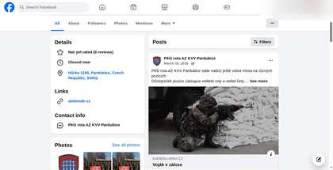
Veřejné i soukromé (jen evidence) · 7 položek
Oficiální a AZ účty · 5 položek
TV Armáda, AZTV · 2 položek
ArmadaCR, ObranaTweetuje · 2 položek
Oficiální firemní stránky MO / AČR · 2 položek
Neoficiální vojenská fóra · 3 položek
Defence média, analytici, specialisté · 26 položek


Discord milsim, WhatsApp (jen evidence), … · 3 položek
Bez kategorií · nejnovější nahoře · položky bez data na konci
Chronologický tok ze všech zdrojů · historie se ukládá mezi denními refreshi
Počet archivovaných aktualizací v čase · filtr podle kategorie v navigaci
Vybrané komentáře a odpovědi pod příspěvky sledovaných účtů · nejnovější nahoře · 49 celkem · soukromé osoby anonymizovány
Komentář pod příspěvkem s #nezapomeneme přidává osobní informaci o oceněném/památkovém vojákovi z konkrétní obce.
Poukazuje na to, že v zakázce byly útočné pušky BREN 3, které AČR ještě nemá, a kritizuje prezentaci modernizace; 5 lajků.
Výsměch k logistice dodávek materiálu jako k placené službě za veřejné peníze; 10h, vyjadřuje nespokojenost s nakládáním s rozpočtem.
Sdílení upozorňuje na přítomnost trollích/prokremelských účtů v komentářích náborové stránky, což je bezpečnostní a reputační signál.
Reakce zájemce přímo na náborovou akci Vojákem na zkoušku u 25. plrp, ukazuje poptávku po zkušební službě.
Osobní zkušenost a motivace k aktivní záloze pod náborovým postem; zmiňuje nezodpovězenou otázku k vrtulníkům u AZ.
Kritika relevance cvičení v kontextu války na UA; 53 lajků.
Kritizuje cvičení jako zastaralé a přináší novou informaci o ukrajinském dronu Stormbird; 5 lajků.
Ironická kritika smyslu dodávky materiálu do Černé Hory; 28 lajků.
Uživatel pod videoshrnutím ministra upozorňuje na zprávu Seznam Zpráv, že ministerstvo nepustilo náčelníka Generálního štábu na Ukrajinu, což shrnutí nezmiňuje.
Věcný kritický dotaz na využití ukrajinské nabídky dronové spolupráce; MO zatím neodpovědělo.
Nejvýše řazený komentář pod oceněním vojáků ze zahraničních operací zpochybňuje, že mise hájily české zájmy; má 2 odpovědi.
Kritická reakce zpochybňující reálnou obrannou kapacitu ČR v diskusi pod příspěvkem o novém pluku.
Uživatel se ptá na neověřenou spekulaci, že se do Rakovníka přesune útvar z Pardubic; oficiální účet zatím neodpověděl.
Neověřené tvrzení o náměstkovi bez bezpečnostní prověrky; nejlajkovanější odpověď pod příspěvkem.
Kritizuje načasování kroku náčelníka GŠ týden před volbami.
Zavádějící tvrzení, že se v ČR zatýká za jiný názor.
Věcná kritika výcviku, který podle komentáře nebere v potaz hrozbu FPV dronů.
Ptá se ministerstva na spolupráci s Markvartem a na reakci na ukrajinský „drone deal“; bez odpovědi.
Přidává kontext v podobě citace ministra Metnara z roku 2019 o spolku spojeném s organizátory.
Nejlajkovanější z přečtených reakcí; odkazuje na článek Seznam Zpráv „Mám názory, jaké mám“, který zřejmě vedl k odebrání záštity.
Zpochybňuje, zda má armáda mandát k politickým postojům, a rozproudil diskusi se 6 odpověďmi.
Kritizuje, že AČR akce před udělením záštity neprověřuje, a tvrdí, že v průmyslu se o problému vědělo měsíce.
Stížnost uchazeče, že se nábor neozývá; rozproudila 5 odpovědí.
Zájemce se ptá na kontakt k náboru; viditelná odpověď zatím chybí.
Pisatel žádá MO o prověření neověřeného tvrzení, že na demonstraci 3. 10. vystupoval voják z povolání s proruskými výroky; MO zatím nereagovalo.
Komentář kritizuje válečný/obranný kontext příspěvku.
Komentář upozorňuje na absenci konkrétních útvarů ve zveřejněném výjevu.
Armáda ČR s nadsázkou odpověděla na populární komentář (19 reakcí) pod reelem o dronech.
Stručná kritika nedostatku vybavení MultiCam v zobrazeném výcviku.
Komentář upozorňuje na riziko vnitřního rozkladu před vnějším dronovým útokem.
Ironická poznámka kritizuje dlouhý termín dodání objednaných stíhaček.
AČR na dotaz, zda vojáci umějí s drony pracovat, odpovídá, že právě na to trénují.
Komentář popisuje obavu z pozorování dronem a upozorňuje, že jde zatím jen o civilní stroj.
Komentář kritizuje politické omezení výcviku AČR na Ukrajině v kontextu cvičení Drone Shield.
Silná kritika výdajů na obranu pod příspěvkem MO o pomoci válečným veteránům.
Komentář doplňuje konkrétní historickou událost a její aktéry.
Komentář spojuje ostrou kritiku s neověřeným obviněním z vymývání mozků a přípravy třetí světové války.
Na dotaz reagoval ověřený účet Armády České republiky věcným vysvětlením.
Komentář se ptá, co se děje, a oficiální účet na něj reaguje vysvětlením.
Komentář doplňuje konkrétní novou informaci o výzbroji Gripenů.
Komentář veřejně upozorňuje na údajnou zranitelnost dělostřelecké jednotky vůči dronům.
Pod tiskovou konferencí MO k sanaci NP Šumava diváci žádají dohledání odpovědnosti za uložení sudů.
Aktuální popis přijímače ve Vyškově (délka ~6 týdnů, bez volných víkendů, ubikace) – novější než informace ve videu.
Příslušník AZ upozorňuje na ženijní družstvo AZ u 72. mpr v Přáslavicích s volnými místy.
Přímá zkušenost z běžícího kurzu: volno jen dva dny po prvních dvou týdnech.
Autor kanálu opravuje video: 74. prapor v Bučovicích je od 2020 mechanizovaný s BVP-2.
Doplňující informace zevnitř: u 72. mpr může být příslušník AZ i řidičem BVP-2.
Zkušenost absolventa přijímače s přístupem instruktorů k vojákům v záloze; nejvíce lajkovaný komentář.
Žádné komentáře pro zvolený filtr.
Denní měření HTTP dostupnosti a TLS certifikátů webů (bez sociálních sítí) · 14 dní historie · barvy: ≤ 14 dní, ≤ 30 dní
Vydavatelé: DigiCert Inc: 26 · Let's Encrypt: 21 · bez TLS (http): 2
Expirace ≤ 30 dní: www.valka.cz (8 dní), rentaacr.cz (13 dní), www.armadninoviny.cz (19 dní), www.securityoutlines.cz (21 dní), jirivojacek.cz (21 dní), www.az44lmopr.cz (24 dní), groups.io (30 dní), resco-cr.cz (30 dní)
Všechny odchozí odkazy mapy (dlaždice, detaily, feed, historie, komentáře) · kontrola 9.10.2026
Archivy: archive.org má snímek u 361 z 590 odkazů (poslední dávka Save Page Now 8.10.2026: error 60). archive.today (archive.ph) automatické vyhledání i uložení blokuje captchou/429 – odkazy „archive.is“ vedou na nejnovější snímek, pokud existuje (pokus o uložení: error 1).
Telegram, WhatsApp, TikTok, Discord, fóra · stav k 2026-09-06
Detailní podklady: data/alt_platforms_2026-09-06.md
Denní shrnutí důležitých událostí na sledovaných kanálech · nejnovější nahoře · 14 dní
Ample Strike 2026: 600 vojáků a 19 zemí; DEFENCEO o civilním a obranném průmyslu; CZ BREN 3 do Černé Hory; valka.cz cert 8 d.
Na Vítkově ocenili vojáky ze zahraničních operací; AČR buduje 14 praporů územní obrany; Černá Hora převzala český materiál; valka.cz cert 9 d.
Rakovník má nový logistický pluk; radar eSAURION; komentáře k odebrání záštity Future Air Force; valka.cz cert 10 d.
Bold Quest 2026 u speciálních sil; Havlíček o obranném průmyslu; +19 termínů KZP na rok 2027; valka.cz cert 11 d.
MO slaví 30 let W-3A Sokol; Střecha o penězích na obranu; +2 komentáře; valka.cz cert 12 d.
MO Dukla 1944; czdefence Kanada/Farlík; +5 událostí; valka 13d.
VA Vyškov 30 let; X live; ardos up; archive 35/25.
MO ADEX v Baku; AČR nové FB; +5 komentářů; archive 2/58.
Drone Shield na FB/X AČR; czdefence GPS; valka up; archive 0/60.
Vítkov: Symboly státnosti; czdefence o reakčním čase; archive 0/60.
Wolfram 2026 na POKOS; Farlík a dezinformace na czdefence; 2 nové akce UO.
Armáda chystá 8. Army den na Floře; do kalendáře přibyly 4 akce (Symboly státnosti, Bráníme srdcem).
Na Vítkově ocenili veterány IFOR/SFOR; AČR vysvětlila noční Gripeny nad Pardubicemi.
MO pilotně otevírá Kurz důstojníků v záloze pro vysokoškoláky; stránka AZ u KVV Praha vrací 404.
Nadcházející akce Armády ČR a Aktivní zálohy – základní příprava (přijímač), nábor a dny otevřených dveří, cvičení a veřejné akce. Jen z ověřitelných zdrojů, každá akce má odkaz na zdroj. Časy jsou v SEČ/SELČ (Praha) · data aktualizována 7. 10. 2026.
https://mapa-acr-az.vercel.app/events.icsOdebíraný kalendář se aktualizuje sám (Google obvykle do 24 h). Když odkaz pro Google nahlásí chybu, přidejte adresu ručně: Google Kalendář → Nastavení → Přidat kalendář → Z adresy URL.Úvodní prezentace v 8:30, 9:15 a 10:00, pak prohlídka školy (2–3 h). Registrace vyžadována.
Akce pro zájemce starší 18 let o službu v AČR nebo AZ: výcvikové drily, boj zblízka, první pomoc, zbraňové systémy a jízda ve vojenských vozidlech. Pro média fototermín 9. 10. 2026 od 12.30 u hlavní brány; nutná akreditace do 7. 10. 2026 12:00.
Intenzivní výcvik pro novináře a humanitární pracovníky (vyjednávání, přežití, první pomoc). Media Day 5. 10. 2026; akreditace do 1. 10. 2026 12:00.
1. blok kurzu základní přípravy: výcvik 14. 9. – 2. 10. 2026, volno 3. – 11. 10. 2026.
Ochrana a obrana vybraných objektů kritické infrastruktury, součinnost s IZS a přesuny v městské zástavbě. Počítejte se zvýšeným pohybem vojenské techniky.
Zkrácený kurz základní přípravy pro specialisty AZ (např. zdravotníky): výcvik 14. 9. – 2. 10. 2026, volno 3. – 15. 10. 2026. Jen v celku.
Hlavní výcviková aktivita 71. mpr s podporou 7. mb, dalších součástí AČR a jednotky Národní gardy z Nebrasky (USA). Více než 1000 vojáků a ~100 kusů techniky; ověřování nových technologií a taktických postupů. Media Day 7. 10. 2026 9:00–12:00.
Venkovní výstava o historii a současnosti tankového vojska včetně nových Leopardů; pro veřejnost do 21. 10. 2026.
2. blok kurzu základní přípravy: výcvik 2. – 23. 10. 2026, slavnostní přísaha 23. 10. 2026, volno 24. 10. – 2. 11. 2026.
Nepřetržitý vojenský výcvik 14. 9. – 23. 10. 2026, slavnostní přísaha 23. 10. 2026, poté volno do 23. 11. 2026. Kurz lze po 1. bloku přerušit.
Výcvik pěších jednotek pro operace v horách. Termín jen na úrovni měsíců (září–říjen 2026).
Cvičení zdravotnických specialistů v prostředí CBRN. Termín jen na úrovni měsíce (říjen 2026).
Mnohonárodní cvičení tankových jednotek zemí V4. Termín jen na úrovni měsíců (září–říjen 2026).
Prověrka schopnosti NATO rychle nasadit síly při aktivaci článku 5. Termín jen na úrovni měsíců (září–listopad 2026).
Průzkum, drony a elektronický boj. Termín jen na úrovni měsíců (říjen–listopad 2026).
Pořad Karpatami v rámci festivalu Lípa Musica; 9. 10. 2026 v 19:00.
8. ročník náborové a prezentační akce ARMY DEN (10:00–18:00). Technika (přelet Mi-17, DANA, Dingo 2, UGV), ukázky, kariérní centrum; důraz na aktivní zálohu.
Pořad k poslechu a tanci Hraje cimbálová muzika v několika blocích od 11:15 v rámci Army dne na Floře.
Kariérní veletrh 1. LF UK; v seznamu náborových akcí Do armády. Vstup zdarma 9:00–14:00. Určeno studentům a absolventům lékařských a nelékařských zdravotnických oborů.
Stánek armády na veletrhu vzdělávání a pracovních příležitostí EDUCA EXPO.
Prezentační výstava středních škol Kam po ZŠ – SPŠ Ostrov; uvedeno v seznamu náborových akcí Do armády.
Stánek armády na veletrhu vysokoškolského vzdělávání Gaudeamus.
16. ročník mezinárodního veletrhu a odborného fóra Future Forces: obranné a bezpečnostní technologie, operační zkušenosti. Navazuje veřejný Den bezpečnosti a obrany 24. 10. (již v kalendáři).
Prezentace na akci Kam po ZŠ na Integrované střední škole v Chebu; uvedeno v seznamu budoucích náborových akcí Do armády.
Slavnostní vojenská přísaha na konci kurzu základní přípravy (AZ, DVC i vojáci z povolání), poté odjezd domů.
Osvětový den navazující na veletrh Future Forces Forum: venkovní a vnitřní ukázky, stánky složek (mj. Armáda ČR), přednášky od 9:30. Vstup zdarma.
Prezentace armády na kariérním veletrhu leteckého a obranného průmyslu.
Slavnostní přísaha studentů 1. ročníku (AR 2026/2027): napochodování jednotek 8:15, konec 9:30. Veřejnost i rodiny vítány.
Výcvik boje v zastavěném prostoru. Termín jen na úrovni měsíců (listopad–prosinec 2026).
Mezinárodní odstřelovačské cvičení vojenských policií. Termín jen na úrovni měsíců (listopad–prosinec 2026).
1. blok kurzu základní přípravy: výcvik 2. – 20. 11. 2026, volno 21. – 29. 11. 2026.
Zkrácený kurz základní přípravy pro specialisty AZ: výcvik 2. – 20. 11. 2026, volno 21. 11. – 3. 12. 2026. Jen v celku.
Nepřetržitý vojenský výcvik 2. 11. – 11. 12. 2026, slavnostní přísaha 11. 12. 2026, poté volno do 12. 1. 2027. Kurz lze po 1. bloku přerušit.
Nástupní termín pro nováčky – vojáky z povolání (smlouva od 1. 11. 2026): KZP 2. 11. – 11. 12. 2026, přísaha 11. 12. 2026, nástup k jednotce 4. 1. 2027.
Prezentace armády na Veletrhu vzdělávání ve Zlíně (seznam náborových akcí Do armády, odkaz na stránku veletrhu KHK ZK).
Prezentace Univerzity obrany na veletrhu Vzdělání a řemeslo 2026.
Úvodní prezentace v 8:30, 9:15 a 10:00, pak prohlídka školy (2–3 h). Registrace vyžadována.
Pěší přesun příslušníků AČR přes území vybraných obcí a krajů v rámci cvičení Big Foot (podle vyrozumění Krajského úřadu Kraje Vysočina).
2. blok kurzu základní přípravy: výcvik 20. 11. – 11. 12. 2026, slavnostní přísaha 11. 12. 2026, volno 12. – 21. 12. 2026.
Úvodní prezentace v 8:30, 9:15 a 10:00, pak prohlídka školy (2–3 h). Registrace vyžadována.
Den otevřených dveří na fakultách UO: Brno FVT/FVL, Vyškov (vojenská chemie) a Hradec Králové VLF.
Slavnostní vojenská přísaha na konci kurzu základní přípravy (AZ, DVC i vojáci z povolání), poté odjezd domů.
Nepřetržitý vojenský výcvik 4. 1. 2027 – 12. 2. 2027, slavnostní přísaha 12. 2. 2027, poté volno 13. 2. 2027 – 11. 3. 2027. Kurz lze po 1. bloku přerušit.
Nástupní termín pro nováčky – vojáky z povolání (smlouva od 1. 1. 2027): KZP 4. 1. 2027 – 12. 2. 2027, přísaha 12. 2. 2027, nástup k jednotce 1. 3. 2027.
Den otevřených dveří Vojenské střední školy na pobočce v Sokolově. Registrace není nutná.
Úvodní prezentace v 8:30, 9:15 a 10:00, pak prohlídka školy (2–3 h). Registrace vyžadována.
Slavnostní vojenská přísaha na konci kurzu základní přípravy (AZ, DVC i vojáci z povolání), poté odjezd domů.
Nepřetržitý vojenský výcvik 1. 3. 2027 – 9. 4. 2027, slavnostní přísaha 9. 4. 2027, poté volno 10. 4. 2027 – 6. 5. 2027. Kurz lze po 1. bloku přerušit.
Nástupní termín pro nováčky – vojáky z povolání (smlouva od 1. 3. 2027): KZP 1. 3. 2027 – 9. 4. 2027, přísaha 9. 4. 2027, nástup k jednotce 1. 5. 2027.
Slavnostní vojenská přísaha na konci kurzu základní přípravy (AZ, DVC i vojáci z povolání), poté odjezd domů.
Nepřetržitý vojenský výcvik 3. 5. 2027 – 11. 6. 2027, slavnostní přísaha 11. 6. 2027, poté volno 13. 6. 2027 – 10. 7. 2027. Kurz lze po 1. bloku přerušit.
Nástupní termín pro nováčky – vojáky z povolání (smlouva od 1. 5. 2027): KZP 3. 5. 2027 – 11. 6. 2027, přísaha 11. 6. 2027, nástup k jednotce 1. 7. 2027.
Slavnostní vojenská přísaha na konci kurzu základní přípravy (AZ, DVC i vojáci z povolání), poté odjezd domů.
Nepřetržitý vojenský výcvik 1. 7. 2027 – 13. 8. 2027, slavnostní přísaha 13. 8. 2027, poté volno 14. 8. 2027 – 10. 9. 2027. Termín pro studenty VŠ (DVC) a učitele (AZ); jen v celku.
Nástupní termín pro nováčky – vojáky z povolání (smlouva od 1. 7. 2027): KZP 1. 7. 2027 – 13. 8. 2027, přísaha 13. 8. 2027, nástup k jednotce 1. 9. 2027.
Nástupní termín jen pro studenty Univerzity obrany a Vojenského oboru při FTVS UK: KZP 2. – 24. 8. 2027, volno 25. 8. – 7. 9. 2027; datum přísahy a nástupu k jednotce „bude upřesněno“.
Slavnostní vojenská přísaha na konci kurzu základní přípravy (AZ, DVC i vojáci z povolání), poté odjezd domů.
Nepřetržitý vojenský výcvik 1. 9. 2027 – 15. 10. 2027, slavnostní přísaha 15. 10. 2027, poté volno 16. 10. 2027 – 18. 11. 2027. Kurz lze po 1. bloku přerušit.
Nástupní termín pro nováčky – vojáky z povolání (smlouva od 1. 9. 2027): KZP 1. 9. 2027 – 15. 10. 2027, přísaha 15. 10. 2027, nástup k jednotce 1. 11. 2027.
Slavnostní vojenská přísaha na konci kurzu základní přípravy (AZ, DVC i vojáci z povolání), poté odjezd domů.
Nepřetržitý vojenský výcvik 1. 11. 2027 – 10. 12. 2027, slavnostní přísaha 10. 12. 2027, poté volno 11. 12. 2027 – 12. 1. 2028. Kurz lze po 1. bloku přerušit.
Nástupní termín pro nováčky – vojáky z povolání (smlouva od 1. 11. 2027): KZP 1. 11. 2027 – 10. 12. 2027, přísaha 10. 12. 2027, nástup k jednotce 1. 1. 2028.
Slavnostní vojenská přísaha na konci kurzu základní přípravy (AZ, DVC i vojáci z povolání), poté odjezd domů.
Zatím nemáme žádné nadcházející události z ověřených zdrojů. Nové akce doplňujeme průběžně – odebírejte kalendář a budou se vám objevovat samy.
Pro zvolený typ teď nejsou žádné nadcházející akce.
Den otevřených dveří Vojenské střední školy na pobočce v Sokolově spolu s výstavou středních škol Kam po ZŠ. Registrace není nutná.
11. ročník největší české odborné akce o bezpilotním letectví: přes 50 řečníků, přes 25 vystavovatelů; civilní i obranné využití dronů.
Manažerský summit DEFENCEO v rámci Mezinárodního strojírenského veletrhu: vstup civilních firem do obranného průmyslu, dotační příležitosti, rizika. Vystoupí mj. NGŠ genpor. Hlaváč.
Folklorní tanečně-hudební pořad malých forem Karpatami; 5. 10. 2026 v 19:00.
Folklorní tanečně-hudební pořad velkých forem Ondrášovské putování.
Prezentace armády na Dni uniformovaných sborů.
Prezentační / náborová účast AČR na závodě OCR Lev v Prostějově (dle přehledu náborových akcí Do armády).
Finálové kolo branně-vědomostní soutěže družstev ZŠ z krajských kol KVV. Pro média akreditace do 1. 10. 2026 16:00.
Stánek armády na veletrhu práce a vzdělávání.
Prezentace armády na mezinárodní konferenci městských policií.
Komentovaná prohlídka nové stálé expozice Symboly státnosti před otevřením pro veřejnost. Pro média nutná akreditace (do 27. 9. 2026 13:00).
Den pro média na experimentálním cvičení bezpilotních systémů a protidronové obrany (dynamické ukázky). Určeno akreditovaným médiím.
Prezentační/náborová akce armády na zážitkovém dni s Městskou policií Brno.
Prezentační/náborová akce armády na akci Veteráni na metách.
Vystoupení armádního souboru v rámci Svatováclavských slavností a MFF Český Krumlov. Konec neuveden.
Ukázky vojenské techniky a výstroje (ženisté, pluk RCHBO, Posádkové velitelství Praha), průlet Mi-17, laserová střelnice KVV Praha; zastoupeno i náborem Do armády. Podtitul „Připravenost není panika“.
Prezentační/náborová akce armády – rekrutéři a technika.
Univerzita obrany otevře veřejnosti prostory v rámci Noci vědy (téma Komunikace): testy schopností, laboratoře, ruční zbraně, letecká technika, aerodynamický tunel.
Slavnostní nástup na Čestném dvoře Národního památníku k 30. výročí mise IFOR; předpokládaná účast ministra obrany Jaromíra Zůny a NGS genpor. Miroslava Hlaváče. Pro média akreditace.
Středoškolský hackathon zaměřený na moderní obranné a bezpečnostní technologie (IT, elektronika); pořádá UO se SIT Portem.
Slavnostní nástup příslušníků AČR po působení na zahraničních pracovištích ve strukturách NATO a EU; předání medailí ministra obrany.
Odborná konference o optických a obranných technologiích pořádaná Českým optickým klastrem ve spolupráci s Univerzitou obrany.
26. ročník Dnů NATO a 17. ročník Dnů Vzdušných sil AČR – letecké i pozemní ukázky, premiéra C-390, partnerská země Německo.
Cvičení předsunutých leteckých návodčích (26 týmů JTAC z 16 zemí), rekordní účast aktivní zálohy. Létání v pracovní dny 9–24 h.
Den aktivní zálohy hlavního města: dynamické ukázky vojáků AZ, služební psi, diskuse s vojáky AZ, nábor.
DRILL I - část 2. Otevřít původní článek ↗https://kvv-hlavnimestopraha.mo.gov.cz/aktuality/drill-i-cast-2
https://www.facebook.com/111prUzOAZPrahahttps://www.facebook.com/PesirotaAZPrahahttps://www.instagram.com/az_hlmprahano_dated_news_on_page; also_instagram=https://www.instagram.com/az_hlmpraha; enriched_from_news_subpage
Den patriotů v Sedlčánkách Otevřít původní článek ↗https://kvv-praha-stredoceskykraj.mo.gov.cz/aktuality/den-patriotu-v-sedlcankach
http_404_page; alternate_paths=https://kvv-praha-stredoceskykraj.mo.gov.cz/zaloha-ozbrojenych-sil/aktivni-zaloha; enriched_from_news_subpage; enrichment_refresh_2026-09-20
https://www.facebook.com/pesirotaazhradeckraloveno_dated_news_on_page
VÝSLEDKY - 29. ROČNÍK MEMORIÁLU GENERÁLA KARLA MRÁZKA · odkaz na konkrétní článek není k dispozici – vede na web zdroje ↗
https://www.facebook.com/people/Krajské-vojenské-velitelství-Liberec/61552018054952https://www.facebook.com/profile.php?id=61552018054952post_source=article_teaser; enriched_newer_from_feed_or_news
Krajské kolo branně-vědomostního závodu Otevřít původní článek ↗https://kvvusti.mo.gov.cz/aktuality/krajske-kolo-branne-vedomostniho-zavodu
https://www.facebook.com/profile.php?id=61587157864825no_dated_news_on_page; enriched_from_news_subpage; enriched_newer_from_feed_or_news
https://www.facebook.com/ArmadaCeskerepublikyhttps://www.facebook.com/tendruhyzivotno_dated_news_on_page
ubytovani_info_a_cenik_.docx Otevřít původní článek ↗https://kvv-plzen.mo.gov.cz/sites/kvv-plzen/files/2026-03/ubytovani_info_a_cenik_.docx
https://www.facebook.com/krajskevojenskevelitelstviplzenpost_source=article_teaser; enriched_newer_from_feed_or_news
Padesátdvojka přilákala tisíce návštěvníků. KVV České Budějovice představilo POKOS i možnosti služby v armádě Otevřít původní článek ↗https://kvvcb.mo.gov.cz/aktuality/padesatdvojka-prilakala-tisice-navstevniku-kvv-ceske-budejovice-predstavilo-pokos-i
https://www.facebook.com/AktivniZalohaKVVCeskeBudejovicehttps://www.facebook.com/profile.php?id=100085313851490no_dated_news_on_page; enriched_from_news_subpage; enriched_newer_from_feed_or_news
1. VÝROČÍ 191. PRAPORU ÚZEMNÍ OBRANY · odkaz na konkrétní článek není k dispozici – vede na web zdroje ↗
https://www.facebook.com/people/Krajské-vojenské-velitelství-Jihlava/61556650262502post_source=article_teaser; enrichment_refresh_2026-09-20; enriched_newer_from_feed_or_news
Mladí soutěžící poměřili síly v Memoriálu četaře Arnošta Hrada Otevřít původní článek ↗https://kvv-pardubice.mo.gov.cz/aktuality/mladi-soutezici-pomerili-sily-v-memorialu-cetare-arnosta-hrada
no_dated_news_on_page; enriched_from_news_subpage; enrichment_refresh_2026-09-20; enriched_newer_from_feed_or_news
Cvičení Safeguard 2026 prověřilo schopnosti vojáků aktivní zálohy při ochraně kritické infrastruktury Otevřít původní článek ↗https://kvv-ostrava.mo.gov.cz/aktuality/cviceni-safeguard-2026-proverilo-schopnosti-vojaku-aktivni-zalohy-pri-ochrane-kriticke
https://www.facebook.com/ArmadaCeskerepublikyno_dated_news_on_page; enriched_from_news_subpage; enriched_newer_from_feed_or_news
Celorepublikové finále branně-vědomostní soutěže ukázalo význam POKOS Otevřít původní článek ↗https://kvv-olomouc.mo.gov.cz/aktuality/celorepublikove-finale-branne-vedomostni-souteze-ukazalo-vyznam-pokos
no_dated_news_on_page; enriched_from_news_subpage; enrichment_refresh_2026-09-20; enriched_newer_from_feed_or_news
Nová éra pro 231. prapor územní obrany Otevřít původní článek ↗https://kvv-zlin.mo.gov.cz/aktuality/nova-era-pro-231-prapor-uzemni-obrany
https://www.facebook.com/ArmadaCeskerepubliky/?locale=cs_CZno_dated_news_on_page; enriched_from_news_subpage; enrichment_refresh_2026-09-20; enriched_newer_from_feed_or_news
Reakce na aktuální hrozby – hlavní scénář cvičení 241. praporu územní obrany Otevřít původní článek ↗https://kvv-brno.mo.gov.cz/aktuality/reakce-na-aktualni-hrozby-hlavni-scenar-cviceni-241-praporu-uzemni-obrany
no_dated_news_on_page; enriched_from_news_subpage
Den patriotů v Sedlčánkách Otevřít původní článek ↗https://kvv-praha-stredoceskykraj.mo.gov.cz/aktuality/den-patriotu-v-sedlcankach
no_dated_news_on_page; alternate_for=https://kvv-praha-stredoceskykraj.mo.gov.cz/aktivni-zaloha-1; enriched_from_news_subpage; enrichment_refresh_2026-09-20
Ostravští záložníci uctili památku podplukovníka Josefa Otiska Otevřít původní článek ↗https://aktivnizaloha.mo.gov.cz/aktuality/ostravsti-zaloznici-uctili-pamatku-podplukovnika-josefa-otiska
https://aktivnizaloha.mo.gov.cz/#Homepage latest visible Aktuality item; Facebook icon resolves to a same-page # placeholder.; enrichment_refresh_2026-09-20
Ostravští záložníci uctili památku podplukovníka Josefa Otiska Otevřít původní článek ↗https://aktivnizaloha.mo.gov.cz/aktuality/ostravsti-zaloznici-uctili-pamatku-podplukovnika-josefa-otiska
https://www.facebook.com/VeInKyShttps://www.facebook.com/91skupinahttp://www.facebook.com/share.php?u=https://aktivnizaloha.mo.gov.cz/prehled-jednotek-az&title=P%C5%99ehled%20jednotek%20AZhttps://aktivnizaloha.mo.gov.cz/prehled-jednotek-az#Units directory; sidebar Krátké zprávy contains the latest dated item.; enrichment_refresh_2026-09-20
https://www.facebook.com/doarmady.czInformational landing page, not a news feed; cookie-consent modal was visible in the screenshot.; enriched_from_news_subpage
Krátké zprávy · odkaz na konkrétní článek není k dispozici – vede na web zdroje ↗
https://www.facebook.com/people/Velitelství-teritoriálních-sil/100090037384494/Top homepage news item; visible hero card.; enrichment_sync_20260926
Vojáci, kteří se vrátili ze zahraničních pracovišť NATO a EU, byli oceněni Otevřít původní článek ↗https://acr.mo.gov.cz/informacni-servis/zpravodajstvi/vojaci--kteri-se-vratili-ze-zahranicnich-pracovist-nato-a-eu--byli-oceneni-266119/
https://www.facebook.com/ArmadaCeskerepubliky/Top news tile; cookie-consent banner visible at bottom.; enrichment_refresh_2026-09-20; enrichment_sync_20260926
Veteráni IFOR převzali na Vítkově pamětní odznaky. Mise před 30 lety otevřela českým vojákům cestu k aliančním standardům Otevřít původní článek ↗https://mocr.mo.gov.cz/informacni-servis/zpravodajstvi/veterani-ifor-prevzali-na-vitkove-pametni-odznaky--mise-pred-30-lety-otevrela-ceskym-vojakum-cestu-k-aliancnim-standardum--266142/
https://www.facebook.com/MinisterstvoobranyCeskerepubliky/Top news tile; cookie-consent banner visible at bottom.; enrichment_refresh_2026-09-20; enrichment_sync_20260926
Krátké zprávy · odkaz na konkrétní článek není k dispozici – vede na web zdroje ↗
https://www.facebook.com/radioklubarmadycrhttp://www.facebook.com/share.php?u=https://rkacr.mo.gov.cz/ardos&title=ARDOSARDOS project page; latest sidebar Krátké zprávy item.; enrichment_sync_20260926
Krátké zprávy · odkaz na konkrétní článek není k dispozici – vede na web zdroje ↗
https://www.facebook.com/radioklubarmadycrHomepage news feed; newest dated item visible in page content.; enrichment_sync_20260926
Redirects to Nextcloud login; no public posts visible. Screenshot captures login wall and trial-portal notice.
https://groups.io/g/ardoshttps://groups.io/g/ardos/topicshttps://groups.io/g/ardos/rssPublic group home says ARDOS is a discussion group of Czech HAMs for emcomm; 2 members, archive visible, no messages/posts listed.
Záložáci na dni dětí Otevřít původní článek ↗https://111prapor.cz/2018/06/11/zalozaci-na-dni-deti/
https://www.facebook.com/PesirotaAZPrahapost_source=aktuality_section; http=200; cleared_nav_title; no_dated_news_on_page; enriched_from_news_subpage
11. 11. 2022 Den válečných veteránů Otevřít původní článek ↗https://petatricatnici.eu/node/467
https://www.facebook.com/Renaissance-Group-1433796163510126/?ref=hlhttps://www.facebook.com/Jednotka-Aktivn%C3%ADch-Z%C3%A1loh-A%C4%8CR-P%C4%9Btat%C5%99ic%C3%A1tn%C3%ADci-112302135509894https://www.facebook.com/aktivnizalohyhttps://www.facebook.com/csolplzen/?__xts__[0]=68.ARD8KFPCbt2KJ5eJ7BkfRjliVPOzQ8mwPP_x2ULaagEnN8YYy6ci4ZFfq1OPzlyIzeBLw0iqt9dBBT27i0ZezHzzlKtHjVRbFkqQZEzoA31-agi258g1e3qCqB8a2n3aJM6shW-kR957Sm-ws8OeeCx8bcm2Do_fec4AXgfH9Gj0u_k_2IhWQrKHDdb24A5CWL6Xo8fum5b9w-1Wlez_pE4LMMpH4o7B2u1mc4xnwkyrI_NzM7C_4ZTD-R7p1DNderhy4U-0J1LiZD_4mxFo6qS_xUKJrTMNoDYwng99q8Juyz--QJndmOKz6T4TVIJNFn0SaZV-WWGqe28FzAczPJRafCj3kYSLVmunpTPP6uK6trh_zezhWgpost_source=views-row; social_mention text='Facebook' href=#; http=200; enriched_from_news_subpage
11. 11. 2022 Den válečných veteránů Otevřít původní článek ↗https://petatricatnici.eu/node/467
post_source=forum_topic; http=200; forum_no_topic_extracted; enriched_from_news_subpage
Běhej s IZS 2026 Otevřít původní článek ↗https://www.mpsfar.cz/l/beh-s-izs-2026/
og:title=Stránky příznivců a příslušníků AZ 221. praporu územní obrany (do 1. 10. 2025 pěší roty Aktivní zálohy Krajského vojens; http=200; post_source=heading_near_date
https://www.facebook.com/az44lmoprog:title=44. lehký motorizovaný prapor | motorizovaná rota AZ a minometná četa AZ; no_dated_news_on_page
https://www.facebook.com/43vysadkovyplukpost_source=article; http=200; cleared_nav_title; no_dated_news_on_page
Poslední výběh na Kunětickou horu: Armádní půlmaraton mění podobu Otevřít původní článek ↗https://14plogp.mo.gov.cz/aktuality/posledni-vybeh-na-kunetickou-horu-armadni-pulmaraton-meni-podobu
https://www.facebook.com/aktivnizalohypost_source=aktuality_section; http=200; cleared_nav_title; no_dated_news_on_page; enriched_from_news_subpage; enriched_newer_from_feed_or_news
Krátké zprávy · odkaz na konkrétní článek není k dispozici – vede na web zdroje ↗
post_source=article; http=200; enrichment_sync_20260926
Když vám život nastaví zrcadlo: Reálné obrysy lidského myšlení podplukovníka Martina Krče Otevřít původní článek ↗https://7mb.mo.gov.cz/aktuality/kdyz-vam-zivot-nastavi-zrcadlo-realne-obrysy-lidskeho-mysleni-podplukovnika-martina-krce
https://www.facebook.com/7mbdukelskapost_source=aktuality_section; http=200; cleared_nav_title; no_dated_news_on_page; enriched_from_news_subpage; enriched_newer_from_feed_or_news
Ondřej Bumba Otevřít původní článek ↗https://www.resco-cr.cz/author/ondra/
https://www.facebook.com/systemkrizovehorizeni.czpost_source=article; og:title=Regionální systém civilní ochrany ČR z.s. - Regionální systém civilní ochrany ČR; http=200; cleared_nav_title; no_dated_news_on_page; enriched_newer_from_feed_or_news
https://www.facebook.com/svzcrczpost_source=aktuality_section; og:title=Svaz vojáků v záloze ČR — 92 klubů, 2 500 členů; http=200; cleared_nav_title; no_dated_news_on_page
https://www.facebook.com/csol.czpost_source=article; og:title=Československá obec legionářská; http=200; cleared_site_name_title
Vyhodnocení soutěže Bezpečí začíná v hlavě ... 4 · odkaz na konkrétní článek není k dispozici – vede na web zdroje ↗
https://www.facebook.com/pokos.army.czpost_source=aktuality_section; http=200; cleared_nav_title; no_dated_news_on_page; enriched_from_news_subpage; enrichment_refresh_2026-09-20; enriched_newer_from_feed_or_news
#nezapomeneme Otevřít původní článek ↗https://www.facebook.com/ArmadaCeskerepubliky/posts/pfbid0kD8WPtDUoEQWjQ7YUBKsWdCY2M1ja6SoDUoZtQZ6cMyWWTNQXjaUnsRp3ABEgUFPl
Historie aktualit → · 💬 22 zajímavých komentářů →
captured_while_logged_in; daily refresh 2026-10-01: FB cookie-seed logged-in; screenshots re-taken; fb_loggedin_refresh_20261002; social_screens_refresh_20261005_loggedin_blurred; social_screens_refresh_20261007_loggedin_blurred; social_screens_refresh_20261008_loggedin_blurred; social_screens_refresh_20261009_loggedin_blurred
Nový transportní letoun C-390 přepravil do Černé Hory první dávku vojenského materiálu Otevřít původní článek ↗https://www.facebook.com/MinisterstvoobranyCeskerepubliky/posts/pfbid0ax9LabpjqsYQHM4xRTV7KAzwQnYjY6NF77bE5yKRtAyn9kbe6dFrsmMtdv5VduAZl
Historie aktualit → · 💬 6 zajímavých komentářů →
captured_while_logged_in; daily refresh 2026-10-01: FB cookie-seed logged-in; screenshots re-taken; fb_loggedin_refresh_20261002; social_screens_refresh_20261005_loggedin_blurred; social_screens_refresh_20261007_loggedin_blurred; social_screens_refresh_20261008_loggedin_blurred; fb_date_unreadable_date_from_same_post_on_X_13h; social_screens_refresh_20261009_loggedin_blurred; C-390 Černá Hora
Lákala tě armáda už od maturity, ale přednost dostala vysoká škola? · odkaz na konkrétní článek není k dispozici – vede na web zdroje ↗
Historie aktualit → · 💬 3 zajímavé komentáře →
captured_while_logged_in; daily refresh 2026-10-01: FB cookie-seed logged-in; screenshots re-taken; social_screens_refresh_20261007_loggedin_blurred; social_screens_refresh_20261008_loggedin_blurred; fb_permalink_not_found_20261008 (same post on IG https://www.instagram.com/p/DeMaNKKu9JA/); social_screens_refresh_20261009_loggedin_blurred; fb_permalink_not_found_20261009 (same post on IG https://www.instagram.com/do_armady/p/DeMaNKKu9JA/)
Poslední viditelný příspěvek (AVZdr) · odkaz na konkrétní článek není k dispozici – vede na web zdroje ↗
captured_while_logged_in; still_blocked_content_unavailable; daily refresh 2026-10-01: FB cookie-seed logged-in; screenshots re-taken; social_screens_refresh_20261009_loggedin_still_unavailable (3. den content isn't available); screenshot replaced
Dnes Výstaviště zaplnili nejen IZS, ale také složky armády a jiné podpůrné organizace, které pomáhají všude kde je to potřeba a kdy je to potřeba... samozřejmě tak nesm · odkaz na konkrétní článek není k dispozici – vede na web zdroje ↗
captured_while_logged_in; daily refresh 2026-10-01: FB cookie-seed logged-in; screenshots re-taken
Dnes, 18. června, si připomínáme výročí posledního boje československých parašutistů, kteří se po atentátu na Reinharda Heydricha ukrývali v pravoslavném chrámu sv. Cyr · odkaz na konkrétní článek není k dispozici – vede na web zdroje ↗
captured_while_logged_in; daily refresh 2026-10-01: FB cookie-seed logged-in; screenshots re-taken
Odmakáno, přežito. Report soon! 💪💪💪 #4… · odkaz na konkrétní článek není k dispozici – vede na web zdroje ↗
captured_while_logged_in; daily refresh 2026-10-01: FB cookie-seed logged-in; screenshots re-taken
České maskování vstupuje do nové éry.… · odkaz na konkrétní článek není k dispozici – vede na web zdroje ↗
captured_while_logged_in; daily refresh 2026-10-01: not re-captured today; kept prior
DĚKUJEME, ŽE JSTE POMÁHALI S NÁMI! · odkaz na konkrétní článek není k dispozici – vede na web zdroje ↗
captured_while_logged_in; event_post; daily refresh 2026-10-01: FB cookie-seed logged-in; screenshots re-taken
Jedna z nejčastějších otázek u vstupu do AZ nebo k profíkům je tetování. Velmi, velmi brzy tetování na rukách a na krku přestanou být překážkou. Už žádné shrnuté rukávy… · odkaz na konkrétní článek není k dispozici – vede na web zdroje ↗
captured_while_logged_in; daily refresh 2026-10-01: FB cookie-seed logged-in; screenshots re-taken
captured_while_logged_in; still_blocked_content_unavailable; daily refresh 2026-10-01: FB cookie-seed logged-in; screenshots re-taken
Ať to v Novém roce 2025 pěkně sviští (image post) · odkaz na konkrétní článek není k dispozici – vede na web zdroje ↗
captured_while_logged_in; text visible in image; daily refresh 2026-10-01: FB cookie-seed logged-in; screenshots re-taken
Než letošní účastníci nastoupí na DVC, přinášíme zkušenost jednoho z absolventů. Co ho nejvíc překvapilo? Jak · odkaz na konkrétní článek není k dispozici – vede na web zdroje ↗
captured_while_logged_in; newest post is a shared-video/emoji post; daily refresh 2026-10-01: FB cookie-seed logged-in; screenshots re-taken
#nezapomeneme Otevřít původní článek ↗https://www.instagram.com/armadaceskerepubliky/p/DeQv5A_oeGn/
Historie aktualit → · 💬 3 zajímavé komentáře →
Public profile and latest collab post metadata were visible; Facebook SSO authorization returned to Instagram login rather than creating an Instagram session.; social_screens_refresh_20261005_loggedin_blurred; social_screens_refresh_20261007_loggedin_blurred; social_screens_refresh_20261008_loggedin_blurred; 2026-10-08: nejnovější položka na profilu je společný reel (collab) s planespottercz_official (2026-10-07T16:00:34Z) – použit jako poslední příspěvek; vlastní poslední post https://www.instagram.com/armadaceskerepubliky/p/DeMlwJziMBS/ neotevřen; social_screens_refresh_20261009_loggedin_blurred
Lákala tě armáda už od maturity, ale přednost dostala vysoká škola? 🎓🪖 Nemusíš čekat několik let na konec studia ani si vybírat mezi titulem a službou vlasti. Aktivní záloha ti dává možnost propojit o Otevřít původní článek ↗https://www.instagram.com/do_armady/p/DeMaNKKu9JA/
Historie aktualit → · 💬 1 zajímavý komentář →
Latest visible grid item is the same collab post by stn_one; public profile and post metadata were visible, but Facebook SSO returned to Instagram login.; social_screens_refresh_20261005_loggedin_blurred; social_screens_refresh_20261007_loggedin_blurred; social_screens_refresh_20261008_loggedin_blurred; social_screens_refresh_20261009_loggedin_blurred
Park u Chodovské tvrze patřil 29.8. aktivní záloze hlavního města! 🫡 Den Krajského vojenského velitelství hl. m. Praha a 111. praporu územní obrany nabídl v obrovské konkurenci jiných vojenských akcí · odkaz na konkrétní článek není k dispozici – vede na web zdroje ↗
Public profile and latest post metadata were visible; Facebook SSO returned to Instagram login.
Instagram displayed 'Profile isn't available' (link may be broken or profile may have been removed).
Historie aktualit → · 💬 6 zajímavých komentářů →
post_source=yt_video; http=200; og:title=AZTV; channel_page_no_single_latest_video_extracted
Historie aktualit → · 💬 1 zajímavý komentář →
http://www.facebook.com/ArmadaCeskerepublikyhttps://www.facebook.com/MinisterstvoobranyCeskerepublikypost_source=yt_video; http=200; og:title=tvarmycz; channel_page_no_single_latest_video_extracted
#nezapomeneme Otevřít původní článek ↗https://x.com/ArmadaCR/status/2108429007930745122
Historie aktualit → · 💬 2 zajímavé komentáře →
x syndication refresh 2026-09-20; x syndication refresh 2026-09-21; x syndication refresh 2026-09-23; x syndication refresh 2026-09-26; x_syndication_2026-09-27; x syndication refresh 2026-09-27; x syndication refresh 2026-09-30; x_syndication_cache_kept_20261001; x syndication refresh 2026-10-02; x syndication refresh 2026-10-05; social_screens_refresh_20261005_loggedin_blurred; x syndication refresh 2026-10-06; social_screens_refresh_20261007_loggedin_blurred; social_screens_refresh_20261008_loggedin_blurred; social_screens_refresh_20261009_loggedin_blurred
Nový transportní letoun C-390 přepravil do Černé Hory první dodávku vojenského materiálu Otevřít původní článek ↗https://x.com/ObranaTweetuje/status/2108146029941891166
Historie aktualit → · 💬 5 zajímavých komentářů →
x syndication refresh 2026-09-20; x syndication refresh 2026-09-21; x syndication refresh 2026-09-23; x syndication refresh 2026-09-26; x_syndication_2026-09-27; x syndication refresh 2026-09-27; x syndication refresh 2026-09-30; x_syndication_cache_kept_20261001; x syndication refresh 2026-10-02; x syndication refresh 2026-10-05; social_screens_refresh_20261005_loggedin_blurred; x syndication refresh 2026-10-06; social_screens_refresh_20261007_loggedin_blurred; social_screens_refresh_20261008_loggedin_blurred; social_screens_refresh_20261009_loggedin_blurred
updated their bio. · odkaz na konkrétní článek není k dispozici – vede na web zdroje ↗
captured_while_logged_in; unit_hint=241 prÚzO / former pěší rota KVV Brno
Přátelské setkání bývalých i současných příslušníků 211. praporu AZ · odkaz na konkrétní článek není k dispozici – vede na web zdroje ↗
captured_while_logged_in; image-post title transcribed; unit_hint=211 prÚzO Ostrava
Pěší rota AZ KVV Pardubice stále nabízí ještě volná místa na různých pozicích. · odkaz na konkrétní článek není k dispozici – vede na web zdroje ↗
captured_while_logged_in; unit_hint=201 prÚzO Pardubice
captured_while_logged_in; latest item is a reel with no visible caption/title; unit_hint=AZ AVZdr / Těchonín
Tak to jsme my ... · odkaz na konkrétní článek není k dispozici – vede na web zdroje ↗
captured_while_logged_in; unit_hint=AZ 22. ZVrL Náměšť
Přestože má své zaměstnání, dobrovolně pomáhá v nemocnici | slp.army.cz · odkaz na konkrétní článek není k dispozici – vede na web zdroje ↗
captured_while_logged_in; unit_hint=AZ Správa letiště Pardubice
Gratulace za AZ k velkému úspěchu! · odkaz na konkrétní článek není k dispozici – vede na web zdroje ↗
captured_while_logged_in; displayed date has no year; unit_hint=Vojenská policie AZ
public_group; latest post is an unc captioned photo set; displayed date has no year; unit_hint=141 prÚzO / former rota Liberec
private landing; members-only notice visible; no Join/Připojit click; unit_hint=211 prÚzO Ostrava
private landing; members-only notice visible; no Join/Připojit click; unit_hint=211 prÚzO Ostrava
private landing; members-only notice visible; existing membership-pending state shown; no Join/Připojit click; unit_hint=possibly 131 Hradec / general AZ
private landing; members-only notice visible; no Join/Připojit click; unit_hint=cross-unit AZ community
extra private group from az_social_extra.json (Výstrojní bazar); members-only notice visible; no Join/Připojit click; unit_hint=cross-AZ gear bazaar
extra private group from az_social_extra.json (Těchonín); members-only notice visible; no Join/Připojit click; unit_hint=AZ AVZdr / Těchonín
public profile header visible (teritoriální síly; 1,622 followers); Instagram login prompt blocked opening the latest post; no SSO/login action taken; unit_hint=14 krajských vojenských velitelství / teritoriální síly
Screenshot chybí
Běhej s IZS 2026 Otevřít původní článek ↗https://www.mpsfar.cz/l/beh-s-izs-2026/
[whatsapp] Invite-only group for active members of AZ infantry company KVV Olomouc; join via unit commander. Mentioned on civilian unit fan site mpsfar.cz (gmail contact). No public invite URL published. | evidence: https://www.mpsfar.cz/kontakt/ ; also https://www.mpsfar.cz/l/pozvanka-na-vyslap-na-serak/ (WhatsApp coordination for private AZ meetup); enrichment_sync_20260926
Screenshot chybí
[SAF] Czechoslovak Special Armed Forces · odkaz na konkrétní článek není k dispozici – vede na web zdroje ↗
[discord] Public gaming/milsim Discord (Squad, Arma Reforger); ~195 members per Disdex. Not affiliated with AČR recruitment or Active Reserve. Invite code listed on Disdex: dBMQjR5H8v. | evidence: https://disdex.io/server/1214280554350911568
Screenshot chybí
Task Force Roddenberry · odkaz na konkrétní článek není k dispozici – vede na web zdroje ↗
[discord] Czechoslovak Arma 3 milsim community; ~437 members. Gaming only, not official AČR. | evidence: https://disdex.io/server/302783149962690560
Screenshot chybí
Vojsko — Fórum (sekce Armáda ČR a ČSR) · odkaz na konkrétní článek není k dispozici – vede na web zdroje ↗
[forum] Public civilian military forum; section covers AČR, active reserves, recruitment threads. Index: https://forum.vojsko.net/index.php . Primary fetch unstable/timeout 2026-09-06; existence confirmed via search index snippets. | evidence: https://forum.vojsko.net/index.php ; https://forum.vojsko.net/viewforum.php?f=100
Screenshot chybí
Renta AČR — Diskuzní fórum · odkaz na konkrétní článek není k dispozici – vede na web zdroje ↗
[forum] Civilian community forum on AČR pay, benefits, leaving service. Public board. Community hub: https://rentaacr.cz/komunita.html . Not linked from mo.gov.cz. | evidence: https://rentaacr.cz/forum.php ; https://rentaacr.cz/komunita.html
Screenshot chybí
ZbraneKvalitneCZ — Aktivní záloha - recenze + názory · odkaz na konkrétní článek není k dispozici – vede na web zdroje ↗
[forum] Civilian shooting forum thread with AZ/KZP experience discussion. Strong lead; site returned HTTP 403 to automated fetch 2026-09-06. | evidence: WebSearch snippet for http://zbranekvalitne.cz/forum/viewtopic.php?t=13594
Screenshot chybí
Ministerstvo obrany ČR — LinkedIn · odkaz na konkrétní článek není k dispozici – vede na web zdroje ↗
Oficiální LinkedIn MO ČR (odkazováno z mocr.mo.gov.cz). NGŠ 10/2025 LinkedIn povoluje.
Screenshot chybí
Czech Army / AČR — LinkedIn · odkaz na konkrétní článek není k dispozici – vede na web zdroje ↗
LinkedIn AČR (czecharmy) — kontakty mo.gov.cz; pravděpodobně oficiální. Alternativní slug czech-army existuje se stejnými kontakty.
Přední manažeři, zástupci AČR a státních institucí na konferenci DEFENCEO diskutovali o propojení civilního a obranného průmyslu Otevřít původní článek ↗https://www.czdefence.cz/clanek/predni-manazeri-zastupci-acr-a-statnich-instituci-na-konferenci-defenceo-diskutovali-o-propojeni-civilniho-a-obranneho-prumyslu
tls_connection_closed_from_box; content_verified_via_webfetch_public; screenshot_failed; rss_feed_refresh; feed_source=feed_cache:czdefence.json;via=webfetch_public_tls_blocked_from_box; enriched_newer_from_feed_or_news; feed_source=feed_cache:czdefence.json;via=webfetch-structured; feed_source=feed_cache:czdefence.json;via=feed_cache_json; feed_source=feed_cache:czdefence.json;via=WebFetch; feed_source=feed_cache:czdefence.json;via=WebFetch (box TLS EOF); feed_source=feed_cache:czdefence.json;via=WebFetch (box TLS EOF); confirmed 2026-10-02b + Tatra Phoenix 2026-10-02; feed_source=live:https://www.czdefence.cz/rss2
Lotyšsko převzalo první bojová vozidla pěchoty ASCOD Otevřít původní článek ↗https://www.armadninoviny.cz/lotyssko-prevzalo-prvni-bojova-vozidla-pechoty-ascod.html
experts_capture_2026-09-20; enriched_newer_from_feed_or_news
EU uvolní miliardy na rychlé inovace v obraně. Podpoří malé a střední firmy · odkaz na konkrétní článek není k dispozici – vede na web zdroje ↗
title_fetch_err='utf-8' codec can't decode byte 0xe9 in position 6285: invalid continuation byte; enriched_newer_from_feed_or_news; enrichment_sync_20260926
SECURITY OUTLINES - Security Outlines · odkaz na konkrétní článek není k dispozici – vede na web zdroje ↗
experts_capture_2026-09-20
HMS Attack Otevřít původní článek ↗https://www.valka.cz/HMS-Attack-t299654#807403
experts_capture_2026-09-20; enriched_newer_from_feed_or_news
Čeština · odkaz na konkrétní článek není k dispozici – vede na web zdroje ↗
experts_capture_2026-09-20
title_fetch_err='utf-8' codec can't decode byte 0xed in position 254: invalid continuation byte
New Study Explores Societal Resilience in NATO and Ukraine Otevřít původní článek ↗https://www.iir.cz/new-study-explores-societal-resilience-in-nato-and-ukraine
experts_capture_2026-09-20; enriched_newer_from_feed_or_news
Exekutivní kurz o obranném průmyslu · odkaz na konkrétní článek není k dispozici – vede na web zdroje ↗
experts_capture_2026-09-20; enriched_newer_from_feed_or_news
atm | MAGNET PRESS · odkaz na konkrétní článek není k dispozici – vede na web zdroje ↗
experts_capture_2026-09-20
91_skupina_MO_oficialni; enriched_from_news_subpage
 Plné rozlišení
Plné rozlišenílogged-in capture; viewer identity blurred
logged-in capture; viewer identity blurred; public profile visible after dismissing login modal
logged-in capture; viewer identity blurred
logged-in capture; viewer identity blurred; public profile visible
logged-in capture; viewer identity blurred
logged-in capture; viewer identity blurred; public profile visible
logged-in capture; viewer identity blurred; public profile and posts visible
logged-in capture; viewer identity blurred; Facebook reports content is not available right now
logged-in capture; viewer identity blurred
 Plné rozlišení
Plné rozlišenílogged-in capture; viewer identity blurred; public profile and posts visible
 Plné rozlišení
Plné rozlišenílogged-in capture; viewer identity blurred; Facebook reports content is not available right now
logged-in capture; viewer identity blurred; public profile and posts visible
 Plné rozlišení
Plné rozlišenílogged-in capture; viewer identity blurred; public profile and posts visible
logged-in capture; viewer identity blurred
logged-in capture; viewer identity blurred; profile visible after authenticated retry
 Plné rozlišení
Plné rozlišenílogged-in capture; viewer identity blurred; public profile and posts visible